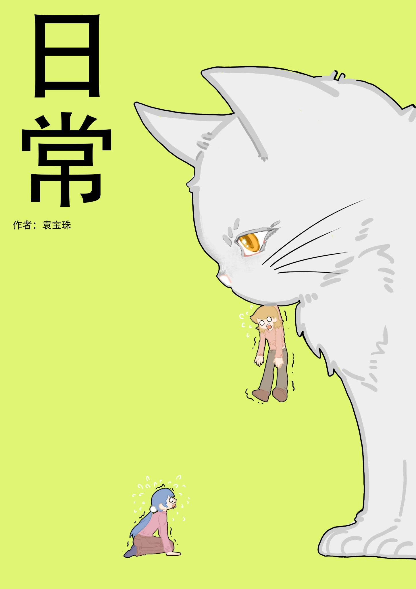

01
项目信息
- 类型原创漫画分镜 / 故事板 / 日常喜剧
- 职责编剧、分镜设计、角色设计、草稿、上色
- 状态分镜稿完成，暂无成片
- 页数规格27 页

一个拖延大学生在诈骗短信与毕设 Deadline 的双重夹击下， 因为一只“等待投喂”的流浪白猫，突然想出毕设《催债猫》。
一个拖延大学生在诈骗短信与毕设 Deadline 的双重夹击下， 因为一只“等待投喂”的流浪白猫，突然想出毕设《催债猫》。
本项目以漫画分镜形式呈现，重点展示从文字剧本到镜头语言的转译过程。故事围绕“压力—观察—灵感”展开： 前半段用手机屏幕、催债短信和诈骗电话制造信息压迫；后半段用流浪白猫的日常喜剧放松节奏， 并让“催债”与“等投喂”形成视觉呼应。当前暂无成片，展示内容为漫画分镜稿。
林悠白假期沉迷游戏，拖延毕设。她收到含真名的虚假贷款催债短信和诈骗电话，陷入个人信息泄露的紧张。 另一边，裴桃受班长委托，转达毕设老师急找悠白的通知。开学后，两人取快递时遇到一只流浪白猫： 白猫会向蹲下的路人示好，误以为对方要投喂，闹出笑话。悠白用肥皂、裴桃用鸡排逗猫， 直到真正的“债主”出现放猫粮。悠白被“等待投喂”的场景触发灵感，把诈骗经历与猫的“催债”行为结合， 确定毕设故事《催债猫》。